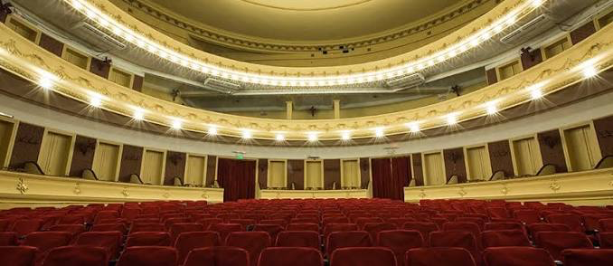
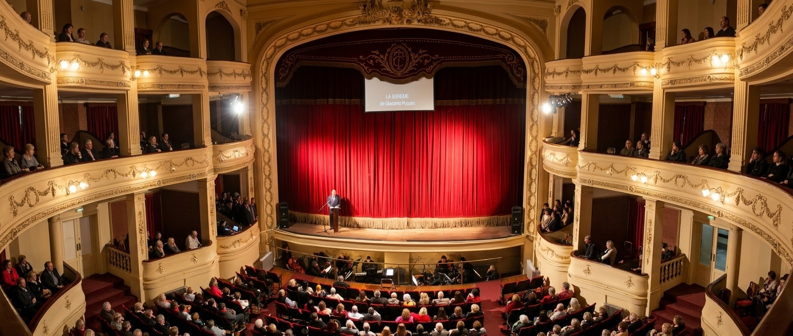
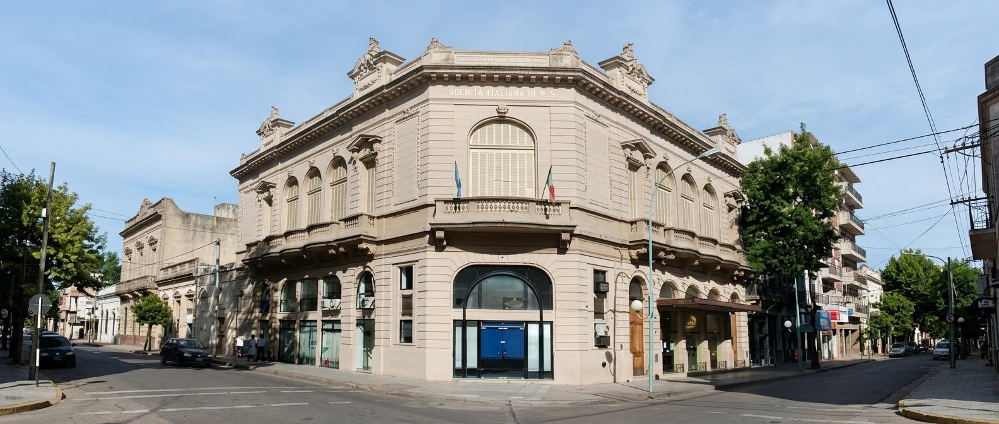

Teatro Coliseo
Un escenario emblemático para la cultura y los espectáculos de Zárate.
Teatro inaugurado el 12 de octubre de 1928, construido por la Sociedad Unione Italiana XX de Settembre con proyecto del arquitecto Enrique Macchi. Es uno de los teatros más notables de la Provincia.
La inmigración masiva entre el último cuarto del siglo XIX e inicios del XX generó típicas modalidades de asociación y organización por parte de las comunidades extranjeras, siendo la construcción de este teatro un claro reflejo de ello. Por su escenario pasaron grandes artistas, como el violonchelista Pablo Casals o el tenor Tito Schipa, compañías de ballet clásico y moderno, elencos de teatro argentino e internacional, orquestas de música clásica, cantantes y conjuntos musicales populares y afamados comediantes del espectáculo nacional.